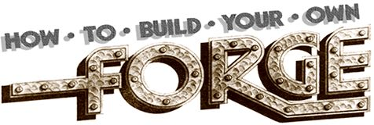
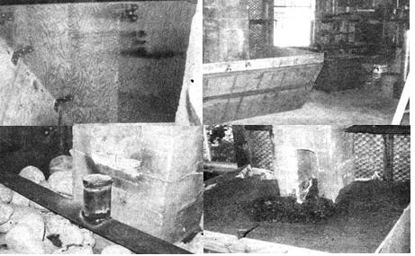
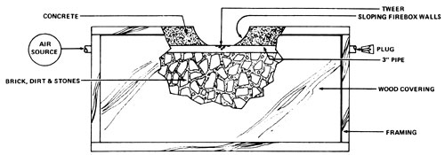

Mention the word "blacksmithing" to most folks nowadays, and they'll probably conjure up a mental image of someone shoeing a horse. To homesteaders who master the basics of the craft, though, smithing can mean far more: the making of hinges, latches for doors and windows, shutter catches, door knockers, lightning rods, gutter hooks, beam end braces . . . kitchen utensils such as knives, meat forks, skewers, strainers, ladies, vegetable choppers, andirons, log tongs, pokers, trivets, fireplace cranes, trammels, pothooks, candleholders, chandeliers, rushlights, and batty lamps . . . tools such as axes, froes, grabhooks, peaveys, wedges, hoes, rakes, nails, chisels, adzes, chains . . . and a wide variety of other items. Those who really master the craft (and are, like me, carnivores who believe in killing the meat they eat) can even build themselves flintlock rifles. This article-then-is for those of you who need metalwork done and can't find anyone to do it, can't afford to hire a smith, or would just plain enjoy tackling such jobs yourselves.
There are two requisites for the beginning blacksmith: [1] a high level of interest, tempered with the patience of Job, and [2] a shop. I can't give you the first, but I can help you set up the second. At present I'll deal mainly with the construction of a forge and the fuels for its operation . . . and hope for a later opportunity to outline the arrangement of the smith's tools and some actual techniques of blacksmithing.
A forge can be set up almost anywhere personal preference dictates: in a house, basement, tipi, barn, dome, shed . . . or out under the sky. Smoke and fumes, however, can be a problem (how serious a problem depends on what fuel you use) . . . and if no chimney is available, a completely open forge-or one protected by a shed-is probably the best choice. (Caution: Any open fire consumes large amounts of oxygen and can be a health hazard in a poorly ventilated space. Also, incomplete combustion of coal and charcoal may cause the emission of deadly, odorless carbon monoxide gas. For safety's sake, please design your work area with these facts in mind.-MOTHER.)
Since money is quite scarce with some of us, I'll now begin by outlining the simplest and least expensive method of constructing a forge. You'll need the following basic materials: 2 X 4's (or 4 X 4's, small saplings, or whatever sturdy wood you can locate), some plywood or planking, dirt, 6 feet of 3 inch pipe, a modest amount of concrete, and a little patience.
A good size for the top of your forge is 3 X 5 feet. This gives you room for a healthy fire, with plenty of extra space to lay out tongs, shovel, poker, pieces of metal, and numerous other odds and ends. The frame should be about waist high so that you can work most efficiently as you move iron back and forth from forge to anvil. Decide on the ideal measurements for your own setup, and build a strong frame to those dimensions.
Once you've got a good solid framework together, close in the four sides with boards, plywood, or whatever is available. The only absolute requirement is that the covering be strong enough to hold large amounts of dirt, rock, and concrete.
A hole-large enough to admit the air pipe-must then be cut in the center of each end of the forge, about 8 inches from its top. Insert the tube so that a length of about 6 inches extends from either end of the frame, and fill the box to the level of the pipe with earth, stone, brick, or mud.
Next, pierce the upper surface of the pipe so that air blown through it can reach the coals in the forge. You'll need to drill 20 to 25 holes (a quarter-inch bit works fine) in a roughly circular pattern near the center of this air inlet. From here on out, the air holes will be referred to as the tweer (also spelled "tuyere" and "twyer-MOTHER.).
You're almost ready-at this point-to fill the frame with concrete . . . but before you do, find some scrap lumber and construct a box about a foot square, open at the top and bottom. Place this around the tweer to prevent the concrete from covering the air holes and the site of the firebox. Then pile in the "mud" and smooth the upper surface.
When the concrete has set almost completely, remove the wooden guard. There should be a neat square hole-the firebox-in the top of the forge. Mix some thick concrete and shape the sides of this opening to slope inward from the upper edge toward the tweer (so that the fuel will continually slide down over the air blast when the forge is in operation).
OK. Now you'll need some kind of a device to force air through the pipe to the tweer . . . and any one of three I have in mind will fill the bill. The first possibility-which is the least to my liking-is an electric blower from an old vacuum cleaner, car heater, or whatever. Such a mechanism should, whenever possible, be coupled to a rheostat with which the motor speed can be varied, since control of the air blast is very important in forge welding and the heating of small items or tool steel.
A better choice is a hand-cranked blower, an efficient machine which is easily handled and moved. And best of all is the bellows . . . which allows the best regulation of airflow, conserves fuel, and heats metal faster than any other air supply I know of.
Any of the above may turn up in junkyards (put me in a good junkyard and I'm in seventh heaven), antique shops, or f lea markets . . . or you may find one of the air movers lying around on an old farm. With a little practice and a good eye, in fact, you can spot all sorts of tools while you're just cruising down the road. I can spy an anvil or a blower 'bout eleven miles off.
Electric blowers are by far the easiest to acquire, with hand-cranked air movers next in line. Bellows-on the other hand-are almost impossible to find and even more so to purchase (and folks who do come by these rarities sometimes use them for-ugh!-coffee table displays). Still, all is not lost. Bellows aren't really difficult to construct, and I hope to provide plans in a future issue of MOTHER.
Just as a general guideline: Any time a good blower can be had for $30.00 or less, take it. I've paid that much for one in only fair condition, and once was able to buy a really fine bellows for $10.00. And don't be intimidated: When you're haggling over price and a seller gives you the old runaround, just stand firm on your offer. If all else fails, keep on looking.
Occasionally a good blower-or even a whole shop-can be obtained from a farmer or retired blacksmith for little or nothing. The secret to such a windfall is the sincere desire to put a fine piece of equipment to the use for which it was intended. Anyone who has ever seriously used a forge and its associated tools is loath to sell them for doorstops and barbecue pit accessories.
Whatever air supply you acquire should be connected to one end of the air pipe; the left end-as you face the forge-if you're right-handed and vice versa for southpaws. This setup leaves the more proficient hand free to tend the fire and the heating metal. Be sure, also, to place the blower so that you can turn the crank, adjust the rheostat, or whatever while standing within comfortable reach of the forge.
At this point one end of the pipe is still open . . . and, although you can't leave it that way, you can't seal it off permanently because you'll need access to the air inlet to remove clogging ash. If you're more industrious than I am, you may want to thread the extremity and obtain a cap that screws on and off. Otherwise, just whittle a wooden plug (slightly oversized for a good snug fit) and hammer it into the hole so that several inches protrude for easy removal of the stopper at cleaning time.
Three fuels are generally used in blacksmithing: coal (hard or soft), coke (coal heated in the absence of oxygen), and charcoal. The following are some of the advantages and disadvantages of each.
Hard coal is easily found in the northeastern states, and is fairly inexpensive. It provides very high heat and burns clean, with little smoke. It is, however, extremely hard to light (add it to a brisk blaze of paper and wood). The fire goes out quickly when unattended, and leaves ashes and clinkers which you'll have to clean out of the forge rather often. Don't throw the ashes away, incidentally . . . they can be reburned in a coal stove.
Soft coal is abundant and cheap in the southeastern U.S. It burns hot to extremely hot and can be packed together to provide a virtual furnace for welding. Combustion is clean to blah, depending on the coal's quality, and large quantities of smoke are given off when fresh fuel is added to the firebox.
To build a fire with soft coal, crumple up a goodly amount of newspapers, light them, and place them in the bottom of the firebox. Gently crank the blower and pour on the coal. Once lit, the fuel will bum for a long time without attention and is easily revived when it does slow down. After lunch, dinner, or a nap just give the blower handle a few turns and the blaze will flare up as hot as ever.
Coke. I haven't had much experience with this fuel myself . . . but British ironworkers use it, and their work is some of the best you'll find in the field. I do know that coke doesn't smoke, it provides a very hot and clean fire, and it sells for about the same price as coal. Just don't buy large lumps. The small size known as "beans" is what you want for forge work.
Charcoal is hard to obtain even if you can afford it . . . and the price-$90.00 a ton-was almost enough to discourage me from trying the fuel in the first place. When I did make the test I found that the fire gave off large quantities of sparks which were both unbelievably hot and impossible to dodge. There was no smoke, though, and no objectionable odors. As a matter of fact, burning charcoal smells good (a characteristic which has killed various unwary persons who foolishly used the fuel in enclosed rooms and inhaled fatal doses of carbon monoxide along with the fragrance.-MOTHER.). The fire is clean, fair-to-middlin' hot, and burns for a long time without attention. Another plus of charcoal: You wilderness dwellers can make your own.
The following pearls of wisdom have cost me several acres of burned, scraped, and scalded skin. Please read them carefully before you attempt to operate your forge.
[1] Everything in a blacksmith shop is either hot, sharp, or heavy . . . especially hot. The worst burns come not from glowing metal-which almost everyone has brains enough to stay away from-but from pieces that are supposedly cool.
To pick up iron without tongs (unless you know it hasn't been heated) is inviting trouble . . . because once you've grabbed a hot piece, the damage is already done and it's much too late to save yourself by turning loose. Always test metal either by touching it quickly with a wet finger or by holding a hand close enough to feel any heat that may be present. Then decide how to handle the article.
[2] Never work with gloves. That sounds strange, I know . . . but we all develop habits, and the day the gloves are misplaced or forgotten will be the day you grab something that s too hot to hold barehanded. Learn to use tongs instead of your hands.
[3] If you do get burned, there's a simple remedy which is very logical but seemingly hard for most people to grasp: Seek out water, snow, or ice immediately, immerse the injured part, and keep it immersed until the burning has completely stopped.
Once a guy accidentally jabbed my hand with an inch square bar of white-hot metal (a case of two people trying to work at one forge . . . a no-no). I made it to the water trough in about a thousandth of a second, plunged the hand in, and left it there until someone got ice to put on the burn. Then I packed the injury with ice for some time, with periodic checks to see if the pain had stopped . . . and after about an hour, it had. There was a large patch of skin burned away, but that was all: no blisters, no discomfort.
And never, never put grease of any kind on a burn. All it does is seal in the heat and cause more tissue damage.
[4] Never work the forge without some kind of eye protection. Partial or total blindness is not conducive to good blacksmithing. I ignored this rule for two years and got away with it . . . until a two-week period during which my apprentice and I generously donated $60.00 to some eye specialists.
Good luck with your forge, and don't be afraid to experiment with changes in the design. If possible, I'll be giving you some advice on blacksmithing tools and techniques in forthcoming issues of MOTHER.
|
 TOP, LEFT: Jimmy Fikes' forge frame is covered with plywood joined by angle irons. TOP, RIGHT: The completed frame, constructed around a chimney, is slanted in at the bottom to allow foot room. BOTTOM, LEFT: Here 'the air pipe is in position and the forge partly filled with stones. BOTTOM, RIGHT: A fire is lit to season the concrete around the tweet. |
 |
 |